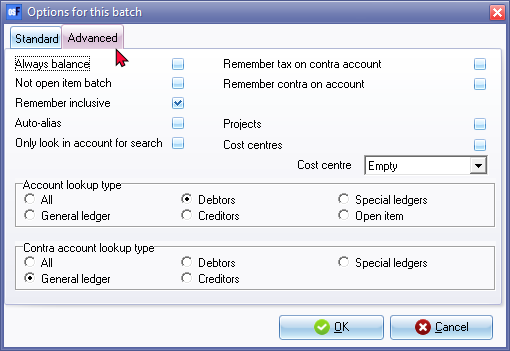

F10:Batch setup - Advanced tab
osFinancials also allows you to set the advanced options for each batch or journal to make the entering and processing of transactions easier, faster and more accurate.

The options are as follows:
- Always balance - Automatically balance the transactions in the batch or journal
- Not open item batch - Disables the Open item selection screens and Open item confirmation messages
- Remember inclusive - Save the settings for tax on the Contra account.
- Auto-alias - Select to automatically generate aliases for this batch.
- Only look in account for search - To be advised.
- Remember tax on contra account - Save the settings for tax on the Contra account.
- Remember contra on account - Save the settings for the Contra account (Balancing Entry) on the selected Account.
- Projects - Activate projects for this batch.
- Cost centres - Activate cost centres for this batch.
- Cost centre - Select the default cost centre for this batch. Cost centres will only be available if cost groups are added in Setup → Groups.
- Account code lookup type - Select to filter list of accounts to be displayed in the lookup facility:
- All - select to display all accounts (i.e. General ledger, Debtors, Creditors and Special ledgers).
- General ledger - select to display all General ledger accounts (excluding Debtors, Creditor and Special ledgers). Examples would be if only need to enter and process transactions which does not apply to Debtors or Creditor accounts, e.g. Depreciation or adjustments to General ledger accounts in the General journal. Other examples would be cash purchases in the Payments journal or Petty cash payments journal which need to be allocated to the Expense and Asset Accounts).
- Debtors - select to display only Debtor accounts (excluding General ledger, Creditors and Special ledgers). An example would be if only sales invoices are batched and entered into the Sales journal for which you only need to select the Debtor accounts. Another example would be if you only batch or group deposits (receipts) for payments received from Debtors.
- Creditors - select to display all Creditor accounts (excluding General ledger, Debtors, and Special ledgers). An example would be if only purchase invoices (received from creditors) are batched and entered into the Purchase journal for which you only need to select the Creditor accounts. Another example would be if you only batch or group a payments (cheque counterfoils or payment remittance advises) for payments made to Creditors.
- Special ledgers - select to display all Special ledger accounts (i.e. General ledger, Debtors and Creditors).
- Open item – Only those General ledger, Debtor and Creditor accounts for which Open item is activated.
- Contra account code lookup type - Select to filter list of accounts to be displayed in the lookup facility for Contra accounts or Balancing transaction accounts:
- All - select to display all accounts (i.e. General ledger, Debtors, Creditors and Special ledgers).
- General ledger - select to display all General ledger accounts (excluding Debtors, Creditor and Special ledgers).
- Debtors - select to display only Debtor accounts (excluding General ledger, Creditors and Special ledgers).
- Creditors - select to display all Creditor accounts (excluding General ledger, Debtors, and Special ledgers).
- Special ledgers - select to display all Special ledger accounts (i.e. General ledger, Debtors and Creditors).